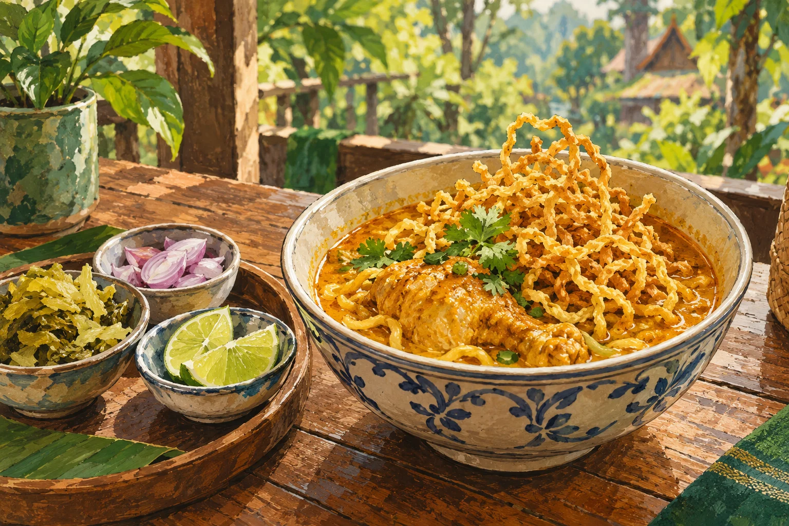
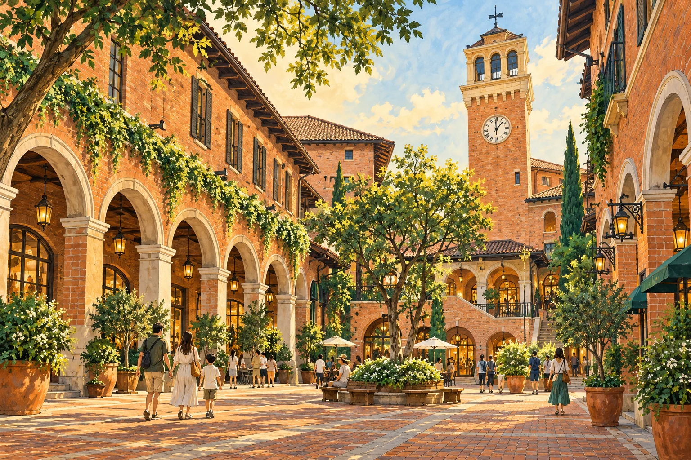
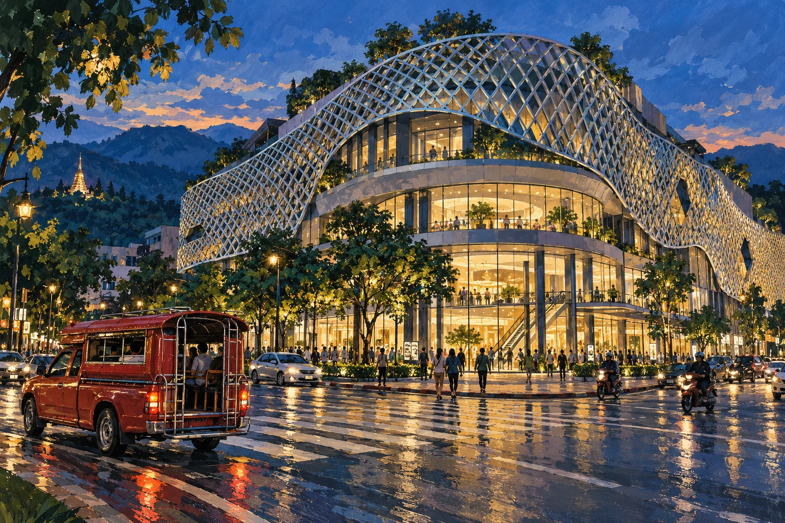

DAY 01 · พฤหัสบดี 21 มกราคม 2027
พบกันที่เชียงใหม่
ลงเครื่อง → รับรถ → ข้าวซอยนิมมาน → เที่ยวใกล้โรงแรม
| เวลา | กิจกรรม / สถานที่ | แผนที่ |
|---|---|---|
| ก่อน 12:00 | กรุงเทพฯ 3 คน ถึงสนามบินเชียงใหม่ ลุง แม่ น้องพลอย เดินทางจากกรุงเทพฯ และรอพบกันที่สนามบิน | นำทาง ↗ |
| 12:40–12:50 | ขอนแก่น 2 คน ถึงสนามบินเชียงใหม่ เฟิร์สกับบีมเดินทางจากขอนแก่นมาสมทบ | นำทาง ↗ |
| 13:30–14:10 | นัดพบกันและรับรถเช่า รับรถ 7 ที่นั่งที่สนามบิน เก็บกระเป๋า แล้วเดินทางเข้าตัวเมือง | นำทาง ↗ |
| 14:20–15:20 | มื้อกลางวัน · ข้าวซอยนิมมาน แวะชิมข้าวซอยและอาหารเหนือย่านนิมมาน | นำทาง ↗ |
| 15:40–16:40 | เข้าพัก B2 Grand Nimman Premier รับกุญแจ 3 ห้อง เก็บสัมภาระ และพักผ่อนตามอัธยาศัย | นำทาง ↗ |
| 17:00–19:30 | เดิน One Nimman → MAYA / หามื้อเย็น เดินเล่น ช้อปปิ้ง และทานอาหารเย็นใกล้ที่พัก | นำทาง ↗ |
| 20:30 | กลับโรงแรมพักผ่อน วันรุ่งขึ้นออกแต่เช้า เส้นทาง 1095 มีทางโค้งต่อเนื่อง | นำทาง ↗ |

ภาพประกอบสร้างด้วย AI
ภาพประกอบสร้างด้วย AI
ภาพประกอบสร้างด้วย AIภาพวาดตีความบรรยากาศ ไม่ใช่ภาพถ่ายจริง รายละเอียดสถานที่อาจต่างจากภาพ